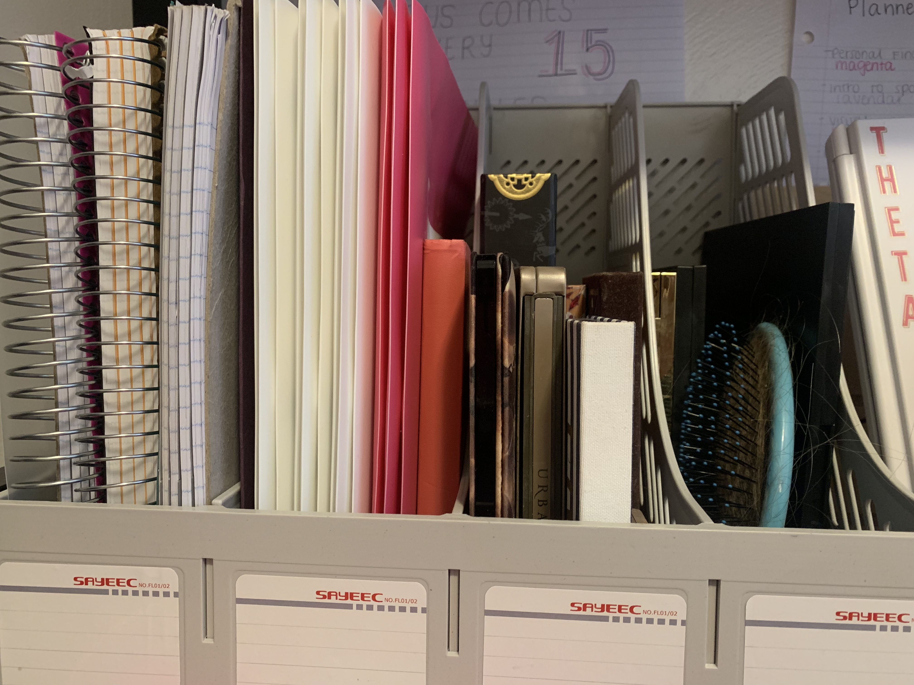

We perceive objects that are close together as being part of the same group.
White Space is Not You Enemy, by Golombisky and Hagen (2016). Focal Press.
In more simple terms, proximity refers to the tendency to think that objects that are visually close belong to the same group.

Because of the law of proximity, the mind automatically assumes that everything that is grouped together is related. The example given shows the notebooks, folders, and makeup are all grouped within their own section, therefore assuming those grouped together are similar.